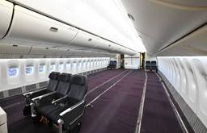
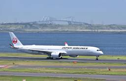
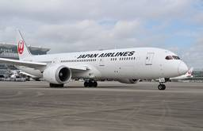
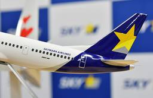
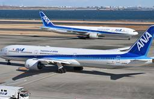
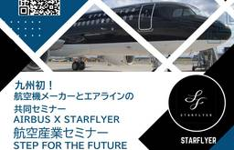
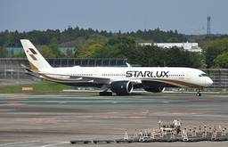

Aviation Wire
https://www.aviationwire.jp
航空経済紙「Aviation Wire」は、航空機やエアライン、空港、官公庁に関する情報や各種統計などをお届けして参ります。
フィード

JAL世界最古777-300ER JA732J売却整備が1位 先週の注目記事26年2月1日-7日
Aviation Wire
2月1日から7日までによく読まれた記事をまとめました。一番読まれた記事は、日本航空（JAL/JL、9201）が羽田空港の格納庫で進めているボーイング777-300ER型機の退役した2号機（登録記号JA732J）の売却整 […]
3時間前

JAL A350-1000、3月もダラスなど機材変更 欠航は解消＝イスラエル機NY接触
Aviation Wire
昨年12月にニューヨークのジョン・F・ケネディ国際空港（JFK）で日本航空（JAL/JL、9201）のエアバスA350-1000型機（登録記号JA10WJ）がイスラエル機に接触されたトラブルの影響で、JALは3月20日 […]
1日前
ベトナム航空、成田・関空－ダナン7月増便＝夏ダイヤ
Aviation Wire
ベトナム航空（HVN/VN）日本支社は2月6日、夏ダイヤ（3月29日から10月24日）の日本路線の運航スケジュールを発表した。2路線あるダナン－成田・関西の2路線を7月から増便し、リゾートへの送客強化を図る。 夏ダイ […]
1日前

JAL、787-9を新客室・ネット接続高速化 ボーイングが11機改修
Aviation Wire
ボーイングは現地時間2月5日、日本航空（JAL/JL、9201）が保有する787-9型機のうち、11機の客室仕様と機内インターネット接続システムを改修することで合意したと、シンガポール航空ショーで発表した。JALの最新 […]
1日前

スカイマーク、737MAXを4月に日本初受領へ
Aviation Wire
スカイマーク（SKY/BC、9204）は2月6日、ボーイング737-8（737 MAX 8）の初号機を4月に受領する見通しだと発表した。日本の航空会社では初の受領となる見通し。就航は10月24日までの夏ダイヤ期間中を予 […]
2日前
ORC、CA募集 6月入社
Aviation Wire
オリエンタルエアブリッジ（ORC/OC）は2月5日、客室乗務員の募集を始めた。入社日は6月中の会社が指定する日で、応募書類は3月5日必着。 勤務地は長崎空港または福岡空港で、人数は若干名。短大卒業以上と同等の学力を有 […]
2日前

ANAと明治、10回目のチョコプレゼント 2/14全便
Aviation Wire
明治（東京・中央区）とANAホールディングス（ANAHD、9202）傘下の全日本空輸（ANA/NH）は、バレンタインデーの2月14日にANAが運航する国内線・国際線全便の機内でチョコレートを乗客に提供する。両社の取り組 […]
2日前

スターフライヤー、エアバスと学生向け航空産業セミナー 就航20周年で3月開催
Aviation Wire
スターフライヤー（SFJ/7G、9206）は2月6日、エアバスと共同で学生向け航空産業セミナー「AIRBUS × STARFLYER 航空産業セミナー STEP FOR THE FUTURE」を3月15日に開くと発表し […]
2日前

スターラックス航空、初の欧州路線 プラハ8/1就航
Aviation Wire
台湾のスターラックス航空（星宇航空、SJX/JX）は、台北（桃園）－プラハ線を現地時間8月1日に開設する。当初は週3往復で、10月からは同4往復に増便する。プラハ空港の運営会社によると、スターラックスが欧州路線を開設す […]
2日前
JR東日本とJAL、鉄道×航空「立体型観光」で人流創出 地方創生へ連携協定
Aviation Wire
JR東日本（東日本旅客鉄道、9020）と日本航空（JAL/JL、9201）は2月6日、東日本エリアの地方創生に向けた連携強化に関する協定を締結した。両社は協定に基づく取り組みを「地域未来創生戦略」と位置づけ、観光需要の […]
2日前